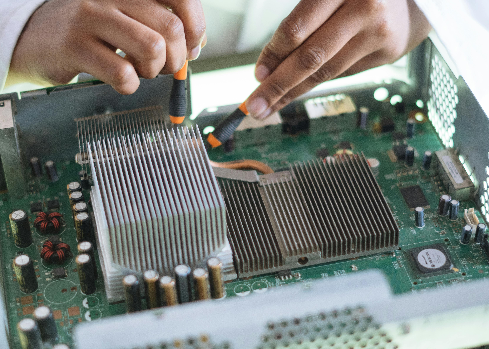

Custom Software Applications NexTech Solutions specializes in developing custom software applications tailored to meet specific business needs. Whether it's a business management tool, customer relationship management (CRM) system, or specialized industry software, we create solutions that streamline your operations and improve efficiency. Cloud Services We offer comprehensive cloud services, including cloud hosting, storage solutions, and cloud-based applications. Our solutions are scalable and secure, allowing businesses to access their data from anywhere with confidence. Cybersecurity Tools Cybersecurity is a top priority for businesses today. NexTech Solutions provides a range of cybersecurity tools, including firewalls, antivirus software, intrusion detection systems, and encryption solutions. Our products help protect your data and systems from unauthorized access and cyber threats. Network Infrastructure We design and implement robust network infrastructure for businesses. This includes routers, switches, Wi-Fi access points, and network monitoring tools. Our solutions ensure high performance, reliability, and security for your business network. Data Analytics and Business Intelligence NexTech Solutions offers data analytics tools that help businesses make informed decisions. Our business intelligence solutions provide advanced data visualization, reporting, and predictive analytics to help you understand trends and make strategic choices. IT Hardware We supply a variety of IT hardware, such as servers, workstations, laptops, and peripheral devices. Our hardware products are sourced from reputable manufacturers and come with full warranties and support. Collaboration Tools In today's remote work environment, collaboration tools are essential. NexTech Solutions provides tools for virtual meetings, project management, and team communication. These products help businesses stay connected and productive
